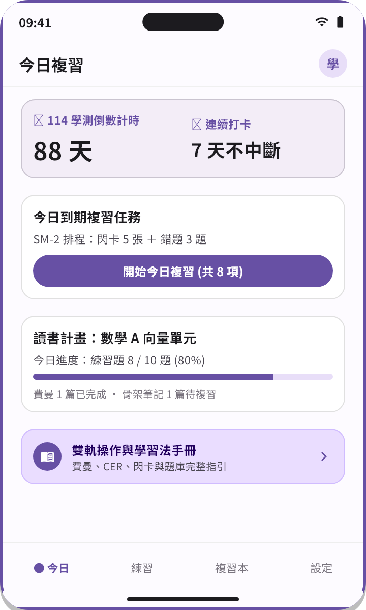
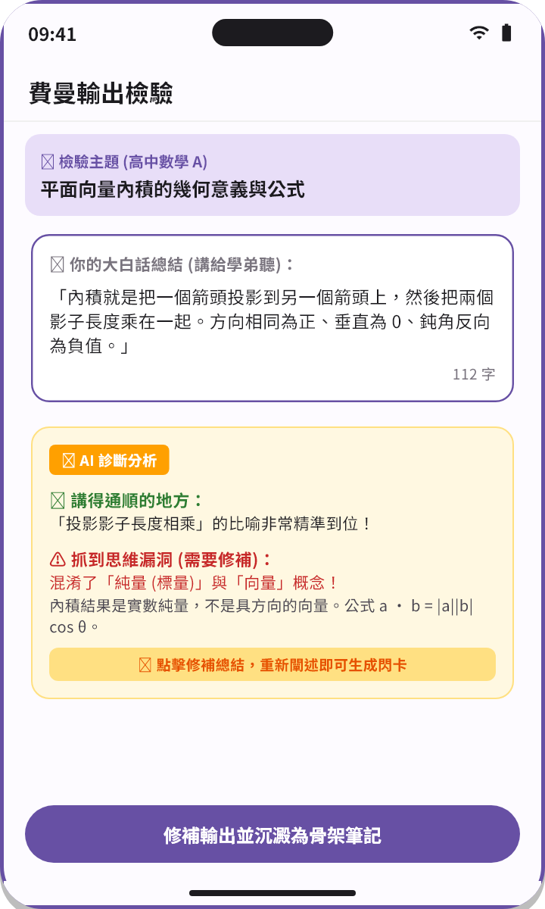
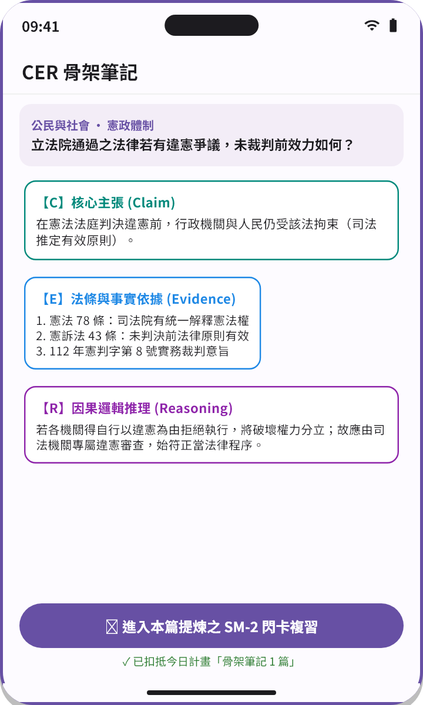
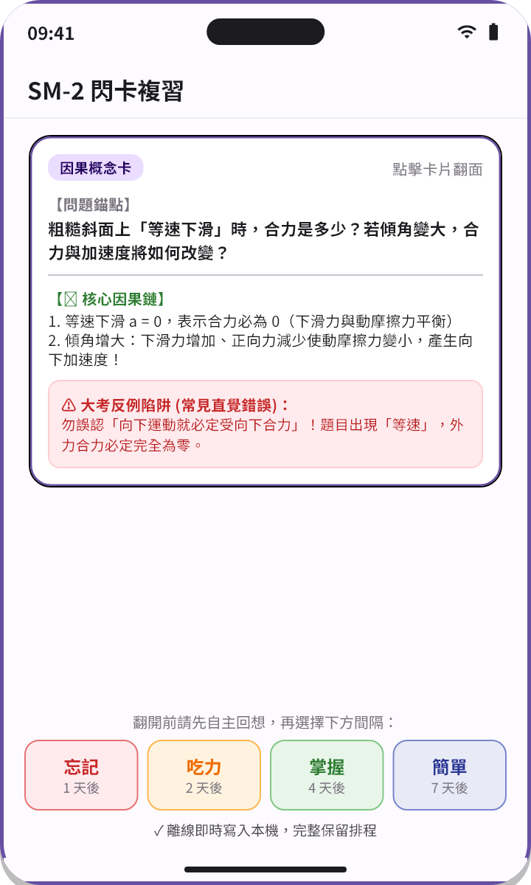
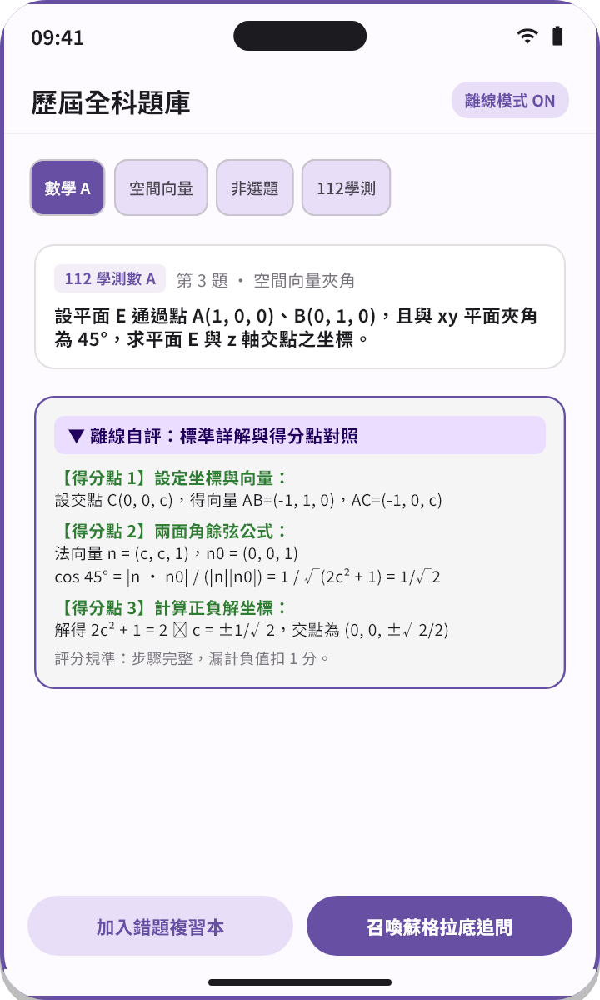
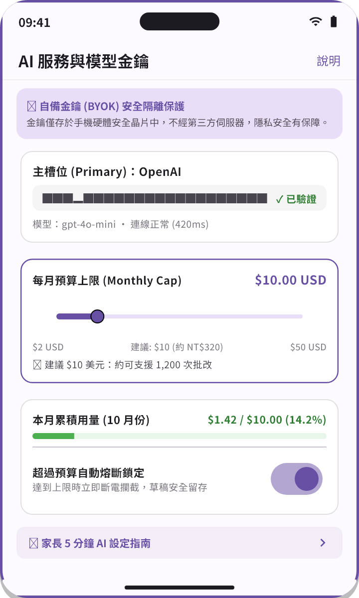
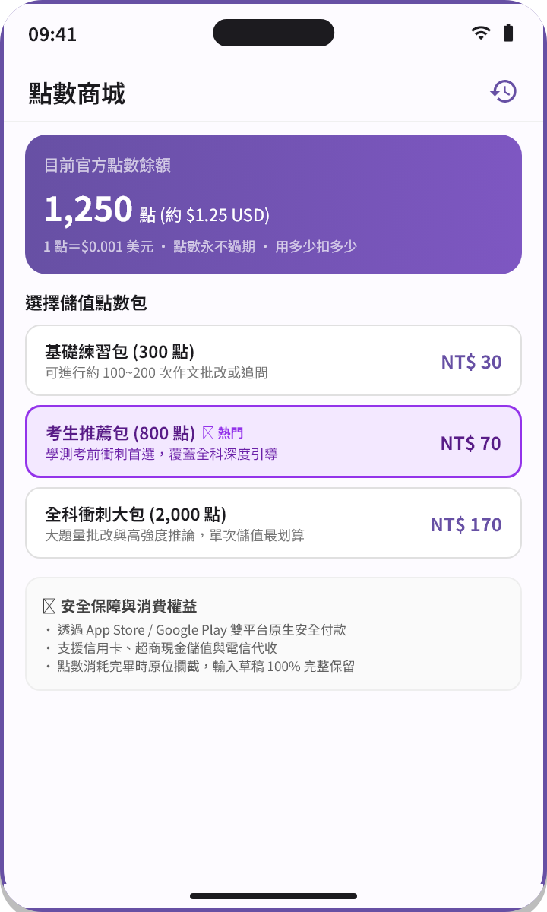
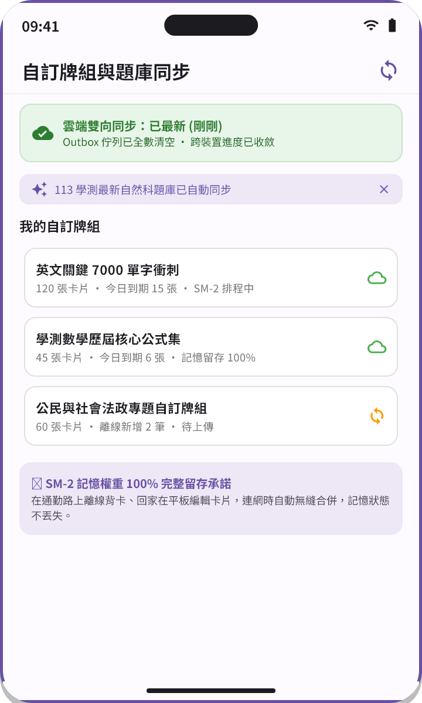

學測教練雙軌操作教學手冊與學習法實踐指引
- 適用版本: v2.1
- 最後更新: 2026-10-29
歡迎使用學測教練！本手冊專為高中學測生與陪伴家長量身打造，將科學學習法（費曼輸出、CER 骨架筆記、SM-2 間隔重複、蘇格拉底追問）深度融入每日備考歷程，協助你從被動死記轉向主動建構。
1. 開始使用
1.1 核心設計哲學：學長姐帶你用
學測備考不是比誰刷的題目多，而是比誰的知識漏洞補得扎實。學測教練以「主動回想」與「反思輸出」為核心架構：
- 先嘗試輸出，再尋求解答：遇到問題先用自己的話說一次，AI 會針對你的盲點進行引導，而不是直接餵給你答案。
- 所有學習足跡全本機優先：你的錯題、筆記與閃卡皆安全存放在本機，離線隨時可讀，隨時可複習。
1.2 三分鐘界面導覽
- 今日指引（首頁）：開啟 App 即可看到今日待複習的閃卡隊列、進行中的費曼挑戰與推薦題目。
- 題庫練習：涵蓋國文、英文、數學 A、數學 B、社會、自然全科 108 課綱題庫，支援章節挑題與循序刷題，並具備雲端題庫差量更新。
- 章節複習：依 108 課綱樹狀單元系統性整理核心概念與考點，支援一鍵發起學習閉環，詳見 108 課綱章節複習導覽。
- 錯題本與復盤：練習作錯的題目會自動匯入錯題本，支援非選自評、錯誤標籤與一鍵轉化為閃卡。
- 閃卡複習與自訂牌組：基於 SM-2 間隔重複演算法，每日精準排程複習，支援跨裝置 自訂牌組雲端同步與備份。
- 設定與說明中心：管理你的個人偏好、匯出資料、本機安全抹除，切換 點數與雙軌模式，並隨時查閱本手冊與 家長設定指南。
首頁操作畫面示範

- ① 學測倒數與連續打卡：頂部卡片即時呈現考前天數（如「88 天」）與連續登入打卡天數（如「7 天不中斷」）。
- ② 今日到期複習任務：由 SM-2 演算法自動排程的今日到期複習隊列（如「閃卡 5 張 ＋ 錯題 3 題」），點擊一鍵開始複習。
- ③ 讀書計畫進度追蹤：視覺化進度條顯示當日科目練習量（如「數學 A 向量單元：8 / 10 題」），即時連動費曼與筆記進度。
- ④ 雙軌教學手冊常駐卡：首頁底部常駐入口，點擊可隨時開啟全套學習法實踐指引。
2. 費曼輸出法
2.1 為什麼要用費曼輸出法
諾貝爾物理學獎得主理查·費曼（Richard Feynman）曾說：「如果你無法用大白話向一個外行人解釋清楚一個概念，就代表你還沒真正搞懂它。」 在學測中，許多同學以為自己看懂了詳解，但換個包裝的素養題就卡關。費曼輸出法強制你將思維具體化，透過「自我檢測知識卡點」實現高效率閉環。
2.2 三步驟實操流程
- 選擇核心概念並錄音/打字：挑選一個你不熟悉的考點（例如：光合作用光反應、牛頓第二運動定律、克卜勒第三行星定律），點擊「費曼輸出」，用自己的話解釋給國中生聽。
- AI 即時診斷與對比：AI 依據課綱標準架構進行語意比對，指出你遺漏的關鍵因果邏輯或專有名詞混淆處。
- 針對漏洞修補並沉澱：依據診斷回饋重新修正你的解釋，驗證無誤後一鍵將關鍵概念提煉為閃卡。
2.3 真實示例
以高中物理「克卜勒第三運動定律」為例： 你的大白話輸出：「只要是繞同一個恆星旋轉的行星，軌道越大的，繞一圈需要的時間就越長，而且長度立方和時間平方的比值是一個固定常數。」
數學公式對照：
其中 為軌道半長軸， 為公轉週期， 為僅與中心天體質量有關的常數。
費曼輸出操作畫面示範

- 示範題目：高中物理【克卜勒第三行星運動定律】核心概念詮釋。
- ① 大白話錄音與文字輸入：學生以白話文解釋概念，支援麥克風語音辨識與打字輸入。
- ② AI 語意盲點診斷：AI 比對課綱核心概念，指出關鍵邏輯缺漏（如「未提及中心天體質量限制」）。
- ③ 一鍵轉化閃卡：診斷確認後，點擊按鈕直接將精準公式與反思結論轉化為 SM-2 閃卡。
2.4 常見錯誤對照表
| 常見錯誤盲點 | 典型錯誤表現 | 正確作法與費曼心法 |
|---|---|---|
| 死記硬背專有名詞 | 只是把課本定義背出來，無法用日常情境打比方 | 想像自己在教小學弟妹，嘗試用生活例子解釋機制 |
| 跳過推導直接看結論 | 只記公式代數字，題目條件微調便不知所措 | 說明公式背後成立的「前提假設」與因果邏輯 |
| 自我感覺良好 | 以為看懂詳解就是懂了，缺乏自我輸出檢驗 | 蓋上書本與筆記，完整說出核心關鍵推論鏈 |
⚠️ 注意 避免過度依賴 AI 修正：AI 的反饋是幫助你找出「講不順的地方」，千萬不要直接複製 AI 給你的修訂範本，必須自己重新用大白話梳理一次才有學習效果。
2.5 本週挑戰
挑選一個你最容易混淆的歷史因果事件或化學平衡原理，進行一次費曼輸出，直到 AI 判定概念完整度達 85% 以上！
3. CER 骨架筆記
3.1 為什麼要用 CER 骨架筆記
在大考素養導向命題下，非選擇題、探究與實作題大幅增加。許多同學並非不懂觀念，而是「回答抓不到重點、論證缺乏結構」。 CER 框架源自科學論證模型（Claim-Evidence-Reasoning），教你用三段式結構精確回答任何問答題與論述題。
3.2 三步驟實操流程
- 提出主張 (Claim)：用簡潔一句話正面回答核心問題，不拖泥帶水。
- 列舉證據 (Evidence)：從題幹引文、圖表數據或已知實驗現象中擷取客觀事實。
- 進行推理 (Reasoning)：運用學科定理或科學原理，說明為什麼這些證據能夠支撐你的主張。
3.3 真實示例
以高中生物「酵素活性實驗題組」為例：
- Claim（主張）：該未知酵素的最適合反應溫度約在 至 之間。
- Evidence（證據）：實驗數據顯示，溫度由 升至 時產物生成速率由 增加至 ；但在 時驟降至 。
- Reasoning（推理）：在最適溫度前，溫度升高使分子碰撞頻率增加；超過最適溫度後，高溫導致蛋白質高階結構變性失活，催化活性喪失，故活性峰值落於 。
CER 筆記操作畫面示範

- 示範題目：高中生物【探究與實作：酵素最適反應溫度判定】。
- ① CER 三欄骨架輸入：分別填入「主張 (Claim)」、「證據 (Evidence)」與「推理 (Reasoning)」。
- ② 骨架完整度即時檢測：系統自動檢查三要素關聯度，防止只有主張缺乏證據支撐。
- ③ 生成結構化筆記卡：一鍵將論證梳理為格式工整的素養筆記。
3.4 常見錯誤對照表
| 常見錯誤盲點 | 典型錯誤表現 | 正確作法與 CER 心法 |
|---|---|---|
| 主張模糊不清 | 「我覺得兩者好像有關係，溫度滿重要的」 | 用肯定句正面回答結論，精確界定範圍 |
| 證據缺乏數據 | 只寫「實驗數據看起來很高」，未引用具體數值 | 引用表格中的具體讀數、坐標變化或對照組差異 |
| 跳過推理直接下結論 | 寫完數據後直接說「所以我的主張成立」 | 補齊科學原理（如變性、碰撞學說、守恆定律）作為橋樑 |
💡 提示 CER 不僅適用於自然科探究題，在社會科歷史因果析論、地理圖表判讀與國寫議論篇章中，也是拿滿論證分數的關鍵利器。
3.5 本週挑戰
從歷屆學測非選題中挑選一題「圖表判讀說明題」，使用 CER 格式撰寫 150 字內的精準回答，並送出給 AI 批改其因果完整度！
4. SM-2 閃卡複習
4.1 為什麼要用 SM-2 閃卡複習
德國心理學家艾賓浩斯（Hermann Ebbinghaus）的遺忘曲線指出，學習後 24 小時內若無複習，將遺忘近 70% 的內容。 SM-2 間隔重複演算法透過計算你的作答回饋，在「即將遺忘的臨界點」安排複習，並動態調節簡易度因子 ，以最少的複習次數維持 90% 以上的長時記憶率。
4.2 三步驟實操流程
- 主動回想正面問題：看見卡片正面題目時，強制自己在腦海中浮現答案或關鍵步驟，嚴禁直接點擊翻面。
- 翻面核對自我評分：誠實選擇你的回想難度：
- 忘記 (Again)：完全想不起來或答錯，立即排入稍後重測。
- 困難 (Hard)：勉強想出但耗時許久，縮短下次間隔。
- 良好 (Good)：正常回想正確，間隔平穩倍增。
- 簡單 (Easy)：秒答且信心十足，顯著拉長下次間隔。
- 完成每日隊列零積壓：每日依排程清空「今日待複習」卡片，維持複習節奏。亦可利用 自訂牌組雲端同步與備份 在手機與平板無縫切換背卡。
4.3 真實示例
數學公式閃卡示例：
- 卡片正面：空間向量中，兩向量 與 的外積 坐標表示法為何？
- 卡片背面：
- 幾何意義：垂直於 與 所張平面的法向量，其長度等於兩向量所張之平行四邊形面積。
SM-2 閃卡複習操作畫面示範

- 示範題目：高中數學【空間向量外積定義與公式】。
- ① 正面題目與隱藏答案：看題後主動回想，點擊中央卡片旋轉翻面。
- ② 翻面後解析與公式對照：背面完整列出矩陣行列式運算與法向量幾何意涵。
- ③ 四檔回想難度評分：Again、Hard、Good、Easy，由演算法即時計算下一輪複習天數。
4.4 常見錯誤對照表
| 常見錯誤盲點 | 典型錯誤表現 | 正確作法與 SM-2 心法 |
|---|---|---|
| 被動看卡片 | 看到題目一秒就點翻面，邊看答案邊點頭「我會」 | 務必在心中完整默背出算式或關鍵字，才算回想成功 |
| 自欺欺人評分 | 明明想不起來卻硬按 Good，深怕卡片重複出現 | 誠實選 Again 才能讓演算法在黃金週期幫你補強 |
| 假日一次刷幾百張 | 平日累積不背，週末熬夜突擊式補進度 | 間隔重複的效果建立在「每日少量但持續」，杜絕積壓 |
✅ 重點 閃卡背面切忌複製整篇課本！一張卡片只專注一個單一概念（Atomic Principle），問答越精簡，記憶提取效率越高。
4.5 本週挑戰
整理 10 張最容易搞混的「英文常見文法介系詞片語」或「化學沉澱表口訣」，連續 5 天完成每日清空複習任務！
5. 蘇格拉底追問
5.1 為什麼要用蘇格拉底追問
許多同學在刷題時，一遇到難題就直接對詳解，看完覺得「我懂了」，但在考場上一旦題幹敘述改變就再度失分。 蘇格拉底追問法（Socratic Method）透過 AI 教練的連續引導式提問，不直接透露答案，逼迫你一步步推導出解題突破口。
5.2 三步驟實操流程
- 輸入題目與卡點：貼上題目描述並明確說出「我算到這一步，但不確定下一步該用哪個定理」。
- 回應教練的啟發性提問：AI 不會直接給予算式，而是反問：「題目給了垂直條件，你聯想到哪個向量運算的性質？」請依據提示嘗試作答。
- 完成推論並一鍵沉澱：當你順利突破盲點時，點擊對話下方的「沉澱為閃卡」，將這次的頓悟點記錄下來。
5.3 真實示例
對話實錄：
- 學生：這題拋體運動，我算不出物體落地時的速度方向。
- AI 教練：很好的嘗試！在分析拋體運動時，我們通常會將運動拆解為哪兩個互相獨立的維度？
- 學生：水平方向的等速度運動，和鉛直方向的自由落體（受重力等加速度）。
- AI 教練：完全正確！那麼落地時，這兩個方向的速度分別是多少？要如何合成出最終速度的方向角？
- 學生：啊！水平速度一直不變，鉛直速度可以用 算出，然後用 就能求出夾角了！
- AI 教練：漂亮！這就是拋體運動的核心解題骨架。
蘇格拉底追問操作畫面示範
- 示範題目：高中物理【斜拋運動落地速度夾角解析】。
- ① 學生提問與盲點輸入：貼上題目並陳述自己卡在「速度合成」步驟。
- ② AI 引導式反問：教練提示水平與鉛直獨立維度拆解，誘導自主推論。
- ③ 頓悟沉澱為閃卡：學生突破盲點後，點擊對話氣泡底部直接沉澱為複習閃卡。
5.4 常見錯誤對照表
| 常見錯誤盲點 | 典型錯誤表現 | 正確作法與追問心法 |
|---|---|---|
| 索求直接答案 | 不斷發送「直接告訴我答案是 A 還是 B」 | 拋開得失心，順著教練的子問題逐步推導思考 |
| 回覆過於簡略 | 只回答「不知道」或「忘了」，不嘗試表達想法 | 把你「猜測」的想法說出來，即使錯了也是重要的思考線索 |
| 未沉澱對話精華 | 聊完獲得解答就關閉頁面，數天後再度忘記 | 每次對話結束時，務必點擊「沉澱為閃卡」或筆記存檔 |
⚠️ 注意 把追問當成直接解題機器人：如果你不斷要求「直接給我算式和答案」，會喪失考場上自行分析未知題目的獨立作答能力。
⚠️ 注意 對話沉澱不及時：在結束對話後，務必點擊「沉澱為閃卡」或「記錄至錯題本」，否則寶貴的頓悟經驗會在數天後淡忘。
5.5 本週挑戰
挑選一題你一直搞不懂的幾何證明或物理分析題，透過蘇格拉底追問完成至少 3 回合對話，直到靠自己的推論得出結論！
6. 練習與題庫實戰
6.1 六科題庫與課綱考點對齊
學測教練完整收錄 108 課綱六大科目題庫：
- 國語文：閱讀理解、跨領域素養題、國寫範文庫與寫作規準。
- 英文：文意字彙、綜合測驗、文意選填、篇章結構與閱讀測驗。
- 數學 A / 數學 B：精準標註單選、多選與選填題，嚴格對齊兩類數學考綱差異。
- 社會科：歷史、地理、公民三科合科題組與圖表判讀題。
- 自然科：物理、化學、生物、地球科學實驗探究題與題組題。
6.2 非選題自評與評分規準
針對非選擇題，系統提供詳細之標準答案要點與給分級距。完成作答後，你可以依據「核心論點」、「數據引用」、「推理邏輯」三維度進行誠實自評，並將盲點歸檔至復盤系統。
6.3 錯題本復盤與標籤管理
- 錯誤原因標籤：審題不清、觀念模糊、計算失誤、時間不足。
- 智慧過濾：可依科目、單元考點與錯誤原因交叉篩選。
- 復盤閉環：針對錯題進行費曼重述或追問，確認完全掌握後可移出錯題清單。
- 題庫定期更新：題庫全面按 108 課綱章節補齊，每章至少具備 10 題以上之代表性精選練習題。資料庫定期自雲端同步最新試題與勘誤，詳情參閱 題庫自動更新。
✅ 重點 題庫由 AI 生成並經人工審核、對齊 108 課綱，不含大考中心歷屆試題原題。錯題本的價值不在於收集了多少題，而在於每週減少了多少題，建議每週末固定安排「錯題復盤專屬時段」。
6.4 學測題庫與自評操作畫面示範

- 示範題目：112 年學測數學 A 第 3 題【空間向量夾角求值】。
- ① 六科挑題橫向頁籤：可自由切換國文、英文、數學 A、數學 B、社會、自然科，所有題目均已離線等冪預載。
- ② 離線自評展開對照：點擊展開手風琴，呈現大考中心官方評分規準（得分點 1：設法向量；得分點 2：兩面角餘弦公式；得分點 3：正負坐標求解）。
- ③ 本機錯題閉環：非選作答自動儲存於本地複習本，支援一鍵加入錯題本或發起蘇格拉底深度追問。
7. 家長設定輔助
7.1 家長的角色：陪伴而不干預
學測教練的設計理念是賦能學生自主學習。家長可以在背後提供資源與守護，而無須過度干預學生的日常作答細節：
- 安全守護：協助設定 API 金鑰或購買點數包，讓學生安心探索。
- 理解而非審查：透過手冊了解費曼法與 CER 的學習原理，在日常對話中多給予正向反饋。
7.2 何時需要金鑰或官方點數
學測教練絕大部分功能（六科全題庫練習、離線自評、閃卡演算法排程、錯題本、手冊閱讀）均為純本機運行，完全免網路、免金鑰。 僅當學生欲使用「AI 批改作文」、「費曼輸出診斷」與「蘇格拉底深層追問」時，才需要金鑰或官方點數。
👨👩👧 家長看這裡 若家長不希望自行在 Google 或 OpenAI 註冊開發者帳號並綁定信用卡，學測教練現已提供開箱即用的「官方點數代理」模式。直接在 App 內點數商城透過 App Store 或 Google Play 購買點數包，儲值後立即可用。點數永不過期，且點數消耗完畢即自動停止，提供最直觀的家用支出上限控制。詳情可參閱 點數與雙軌模式。
7.3 家長 AI 設定與預算守護操作畫面示範

- 示範配置：支援雙軌切換開關、OpenAI 模型（gpt-4o-mini）與每月預算 $10 USD。
- ① 雙軌模式彈性選擇：可一鍵在「官方點數代理」與「自備金鑰 (BYOK)」之間切換，滿足不同家庭習慣。
- ② 自備金鑰安全隔離：若採用自備金鑰，API Key 妥善存放於學生手機硬體安全晶片（Secure Storage），不經第三方伺服器。
- ③ 每月預算滑桿控制：可自訂 $2 ~ $50 USD 上限（建議 $10 USD，約新台幣 320 元，支援數百到上千次批改或追問），到達上限時由狀態機自動短路攔截，杜絕任何意外超額帳單。
7.4 常見疑慮與家長指南完整指引
- 學生資料會被拿去訓練模型嗎？ 透過官方 API 付費通道傳輸之對話，依據服務條款不會被用於訓練模型。
- 需要綁定信用卡嗎？ 若使用官方點數代理，可直接透過雙平台商店付款（支援超商現金儲值與電信帳單）；若使用 BYOK 則依服務商規範。
- 完整金鑰申請步驟：請在 App 內前往設定頁面點擊 家長設定指南（或於 App 內訪問
/settings/parent-guide原生頁面），內含圖文流程。
8. 點數與雙軌模式
本單元功能需更新至最新版 App。
8.1 雙軌切換指南
學測教練提供「官方點數代理」與「自備金鑰 (BYOK)」兩種 AI 運算模式，滿足不同學生的使用需求：
- 官方點數代理：開箱即用、免去申請雲端 API 金鑰與信用卡綁定的繁瑣步驟；透過雙平台應用程式內購買（IAP）點數包，以微美金進行按字扣抵。適合希望快速上手、專注備考的同學與家庭。
- 自備金鑰 (BYOK)：直接連線至 Google AI Studio 或 OpenAI 官方 API，金鑰存放於本機硬體安全晶片，並提供每月預算滑桿防護。適合已有 API 金鑰或希望使用自訂模型參數的同學。
三步驟切換動線
- 前往「設定」頁面，找到「AI 服務與雙軌設定」。
- 切換「官方點數代理模式」開關；若目前為訪客身份，系統將主動引導綁定帳號以保護點數安全。
- 切換完成後，觀察頁面頂部的「即時餘額膠囊」，確認當前可用點數狀態。當啟用官方代理時，自備金鑰槽位將自動置灰收合，原設定與金鑰妥善封存。
雙軌切換實操示範
💡 提示 雙軌互切資料不互刪保證：在官方代理與自備金鑰之間切換，僅改變 AI 批改與推論的連線管道，絕不會清除你的 API 金鑰、點數餘額、錯題本、自訂牌組或學習記錄。
8.2 IAP 點數包購買與微美金扣抵說明
官方點數代理採用透明、精確的「微美金（Micro-USD）會計系統」：
- 核心計費原則： 點 ＝ $0.001 美元（約新台幣 0.03 元）。
- 按字扣抵、用多少扣多少：系統僅依據每次費曼批改、作文診斷或蘇格拉底追問實際消耗的 Token 計算，無任何月租或最低消費。一般單次批改花費約 0.5 至 3 點（折合約新台幣 0.02 至 0.1 元）。
- 點數永不過期：購買的點數包無使用期限，未用完的點數將持續安全留存於你的雲端帳戶中。
- 儲值即時入帳：在 App 內點數商城完成購買後，透過後端安全防偽驗證，點數即時增加並同步更新餘額膠囊。
點數商城與微美金扣抵示範

- 雙平台安全內購：點數包透過 Apple App Store 與 Google Play 官方應用程式內購買（IAP）機制支付，支援信用卡、超商現金儲值與電信代收，交易安全有保障。
- 點數不足原位保護：當帳戶餘額不足以發起 AI 批改時，系統將跳出原位攔截提示並引導至點數商城；儲值完成返回後，你所撰寫的大白話總結與作答草稿 100% 完整保留，絕不遺失。
- 商品面額以 App 內標示為準：點數商城提供多種級距之點數包，具體商品規格、定價與優惠依 App 內商城即時標示為準。
⚠️ 注意 為了保障消費安全與帳號權益，點數儲值僅限於 App 內正規雙平台商店通道完成，絕無任何外部私下交易或第三方儲值管道。
9. 自訂牌組雲端同步與備份
9.1 雲端同步與多裝置運作
學測教練採用「本機優先（Local-First）＋ 雲端即時收斂」架構，讓你在手機、平板與多裝置之間暢行無阻：
- 登入即同步：登入個人帳號後，系統自動啟用自訂牌組與學習進度之雙向同步。
- 本地 Outbox 佇列：所有新增、編輯或刪除自訂牌組與卡片的操作，皆第一時間寫入本機 SQLite 資料庫與 Outbox 佇列，操作零延遲。
- 背景自動推送：連網狀態下，系統自動將 Outbox 佇列異動推送至雲端，無需繁瑣手動操作。
自訂牌組雲端同步示範

9.2 離線編輯與 SM-2 留存
備考路上難免遇到無網路或訊號不穩的情境（如捷運通勤、地下自習室）：
- 無網離線背卡：離線狀態下你可以照常翻閱複習自訂牌組中的每一張卡片，並點擊四檔評分。
- SM-2 記憶權重 100% 留存：即使你在手機離線背卡、同時在家用平板修改同一張卡片的題目，當兩端上線同步時，雲端收斂演算法將完整保留你在各裝置的所有複習歷史與記憶熟練度權重，絕不抹除複習成效。
- 卡片內容最新獲勝：若同一張卡片的正面或背面文字在不同裝置發生修改衝突，系統以最新修改時間戳（毫秒級）精確判定勝出內容。
- 標籤安全保護：刪除標籤時採用軟刪除與解除關聯機制，確保自訂牌組內的卡片不受損壞。
9.3 雲端題庫自動差量更新
學測教練的六科題庫並非一成不變，團隊會持續收錄最新大考試題與勘誤更新：
- 啟動智慧檢查：App 啟動時在背景自動檢查雲端題庫版號，具備 6 小時水位節流保護，兼顧即時性與省電。
- 科目頁更新提示晶片：當檢測到新題目時，科目頁頂部會浮現「題庫已更新」InputChip 提示，點擊可快速瀏覽新題或直接關閉。
- 下拉刷新手動檢查：在科目主頁任何時候向下拉動（RefreshIndicator），皆可手動觸發題庫最新版號檢查。
- 作答歷史零影響：題庫差量更新僅補充新題庫與修正勘誤，你正在練習中的草稿與歷史錯題本進度受到完整保護。
✅ 重點 換新手機或平板時，只需登入同一個帳號，所有自訂牌組、錯題本與題庫進度將自動自雲端完整復原。
10. 離線同步與資料安全
10.1 離線運作邊界
學測教練遵循「本機優先（Local-First）」架構：
- 完全離線可用：題庫載入、閃卡複習、自訂牌組編輯、錯題管理、搜尋與本手冊閱讀皆可在無網路環境下順暢運作。
- 需要網路之功能：僅涉及雲端大型語言模型推論之功能（作文批改、追問、AI 費曼評估）與雲端多裝置同步需要連網。
10.2 同步機制與運作說明
為了兼顧隱私與便利，學測教練支援跨裝置安全備份：
- 資料加密後僅存放於你的個人帳戶空間。
- 同步操作由 App 啟動時背景自動檢查與科目主頁下拉刷新並存，詳見 自訂牌組雲端同步與備份。
⚠️ 注意 iOS 系統對背景任務（Background Tasks）具有嚴格的省電與排程管控，系統不保證在特定時間精確觸發背景同步。因此，若你有跨裝置切換需求，建議在離開 App 前點擊一次「手動同步」或確認頂部狀態為已同步。
10.3 資料安全抹除（Data Wipeout）
如果你打算更換手機或不再使用本服務，可於設定頁面執行「安全抹除本機資料」：
- 此操作將徹底清除本機 SQLite 資料庫、閃卡複習排程與快取記錄。
- 此操作不可逆，請務必於抹除前自行確認或匯出重要筆記。
11. 常見 Q&A
Q1: 為什麼我做完題目的錯題沒有自動出現？
A: 請確認交卷時該題目狀態為答錯。若為非選題，需完成「自評送出」後，系統才會依據自評給分判斷是否納入錯題本。
Q2: 閃卡複習演算法可以調整難度係數嗎？
A: SM-2 演算法會根據你每次翻卡點擊的四檔自評（Again, Hard, Good, Easy）自動動態調整簡易度因子 ，無須手動微調公式參數。
Q3: 換了新手機，我的錯題本和自訂牌組會消失嗎？
A: 若你先前已在設定中登入並完成同步，於新裝置登入同一個帳戶後系統將自動自雲端完整復原自訂牌組與錯題紀錄；若僅使用離線訪客模式，請先至設定頁匯出備份檔案。
Q4: 費曼輸出可以說英文或台語嗎？
A: 系統以繁體中文課綱為基準進行語意分析；英文科考點支援英文輸出，其餘學科建議使用繁體中文以獲得最精準的因果鏈診斷。
Q5: 家長指南的 API 金鑰每個月大概會花多少錢？
A: 一般學測生每日進行 3-5 次概念追問與每週兩篇作文批改，每月花費通常在 $1 ~ $3 美元以內。設定 $5 ~ $10 的硬上限可完全避免任何超額風險。若選擇官方點數代理，更可直接在 App 內選購合適的點數包，用多少扣多少。
Q6: 為什麼公式有些地方顯示為純文字？
A: 本手冊與 App 支援標準 LaTeX 數學公式（如 <math><mrow><mi>E</mi><mo>=</mo><mi>m</mi><msup><mi>c</mi><mn class="tml-sml-pad">2</mn></msup></mrow></math>）。若公式語法有缺漏或符號未閉合，系統將優雅降級為原始文字呈現，不影響正文閱讀。
Q7: 題庫題目有包含解答詳解嗎？
A: 全科六目核心試題均附有完整解析與考點歸納；非選題更提供維度評分規準供自我檢視。
Q8: 可以在平板電腦上使用嗎？
A: 可以。學測教練針對平板裝置（寬度 ）提供專屬雙欄自適應介面，左側常駐目錄或導覽，右側寬版閱讀，操作更直覺。
Q9: 為什麼有時候追問功能回答得比較慢？
A: 蘇格拉底追問會根據你的歷史對話與題幹全貌進行多步推理，以提供不劇透的引導式問題。一般回應時間約在 2~4 秒之間，視網路狀態而定。
Q10: 可以在沒有網路的火車或捷運上背閃卡嗎？
A: 完全可以！閃卡複習與間隔重複排程是 本機離線運作的，無網路環境下依舊能暢快翻卡。
Q11: 什麼時候該點擊「沉澱為閃卡」？
A: 當你在追問對話或費曼輸出中獲得頓悟，或是找到了最精準的記憶口訣時，點擊「沉澱為閃卡」可立即將該精華鎖進未來的複習排程。
Q12: 刪除 App 會讓我的學習紀錄全毀嗎？
A: 訪客模式下的資料存於 App 專屬沙盒中，刪除 App 會導致本機資料被系統清除。建議登入帳號以啟用雲端同步守護成果。
Q13: 官方代理點數會過期嗎？可以退款嗎？
A: 官方點數永久有效、絕不過期，無任何月租或扣抵時效壓力。退款政策依循 Apple App Store 與 Google Play 雙平台消耗型商品標準規範處理。
Q14: 換了新手機，我的點數和自訂牌組會消失嗎？
A: 不會。點數餘額與自訂牌組均安全綁定於你的個人帳號中，只要在新裝置登入相同帳號，即可立即完整還原餘額與所有自訂牌組。
Q15: 兩台裝置同時離線修改同一個自訂牌組，同步時會怎樣？
A: 系統以雲端收斂演算法精確裁決：卡片內容衝突以最新修改時間戳（毫秒級）獲勝；而兩台裝置上的所有 SM-2 複習權重、翻卡記錄與熟練度評分將 100% 完整合併保留。
Q16: 自備金鑰 (BYOK) 和官方點數代理可以同時啟用嗎？
A: 雙軌為互斥切換設計，每次發起 AI 批改與推論時使用一種模式。你可以隨時在「設定」中無縫切換，兩邊的配置與額度互不干擾，資料絕不互刪。
Q17: 官方代理點數是怎麼計費扣款的（微美金制度）？
A: 官方代理以微美金（Micro-USD）計費，契約恆定為 1 點＝$0.001 美元。依每次送出的題幹長度與 AI 生成回覆的實際 Token 數精確扣抵，每次約 0.5 至 3 點（約新台幣 0.02 至 0.1 元），無月租低消。
Q18: 題庫更新後，我做到一半或正在練習的題目會受影響嗎？
A: 完全不會。題庫雲端同步採用差量拉取機制，僅補充最新發布試題與勘誤修正，你目前正在作答的題目、草稿與歷史錯題本進度受到完整保護。
Q19: 「章節複習」和「題庫練習」直接刷題有什麼不同？
A: 「題庫練習」著重於廣度題目演練與計時模考；而「章節複習」則先提供 108 課綱單元的結構化核心觀念與常見盲點講義，並具備「以教代學總結」、「蘇格拉底深度追問」與定向「章節練習」三閉環導流按鈕，協助你先建構觀念再定向練習。
Q20: 為什麼有些章節會顯示「準備中」或 0 題？
A: 為確保講義與試題之最高品質，所有內容均經多階段專業人工審核。少數標記為「準備中」或暫無題目之章節，待雲端審核發布後將自動透過差量更新推送到你的裝置，不影響其他既有單元之正常複習。
Q21: 章節導覽頁面頂部出現「課綱已更新」標籤是什麼意思？
A: 當教學團隊在雲端發布了最新課綱觀念補充或章節內容勘誤時，系統會於開機或連網時自動進行差量同步，並於章節頂部顯示提示標籤（例如「課綱已更新 · 更新 3 章」）。點擊標籤或向下拉動畫面刷新即可獲取最新內容。
Q22: Web Admin 後台是什麼？學生或家長需要登入嗎？
A: Web Admin 為學測教練營運團隊用於題目審核、勘誤自癒與課綱編修發布的內部管理後台，由營運方核發之管理員帳號登入。學生與家長日常完全不需登入後台，所有通過審核的最新題庫與教材均會自動同步至你的 App 中。
12. 108 課綱章節複習導覽
依據 108 課綱核心素養導向，學測教練專屬設計了「章節複習」系統，讓學生能在各學科單元中循序建構觀念，並透過科學閉環深化理解。
12.1 入口與章節樹導覽
進入任何科目的詳細資訊頁後，點擊「章節複習」功能即可開啟該學科完整的 108 課綱樹狀導覽。
- 知識架構導覽：以素養導向為核心，建立系統化認知架構，幫助學生在腦海中快速構築各學科的章節全貌地圖。
- 樹狀單元展開：系統動態依「科目 ➔ 冊次 ➔ 單元章節」三層結構逐層展開，清楚呈現全科知識脈絡與章節進度。各單元支援摺疊與展開狀態記憶，方便專注於攻克中的核心主題。
- 動態雲端更新：系統不寫死靜態課綱冊次清單，所有單元章節皆由教研團隊線上維護並隨雲端差量同步自動保鮮，杜絕紙本手冊的時代差。
章節導覽操作畫面示範
- ① 科目單元展開：點擊章節即可展開閱讀核心觀念精要，各章節清楚標註重點標籤與核心例題題數。
- ② 課綱更新提示：若雲端發布最新章節修訂或補充，頂部將以微型晶片即時呈現「課綱已更新」狀態，一目了然。
12.2 章節重點閱讀
點選進入任一章節後，系統呈現精心編撰的五分區結構化講義：
- 核心觀念精要：提煉 108 課綱核心概念與本質思維，剔除冗贅死記，直擊核心本質。
- 關鍵公式/文法法規：清晰收錄標準 LaTeX 語法排版之公式定理與文法法規，確保符號精確。
- 常見盲點解析：直擊歷屆學長姐最容易混淆的邏輯盲區與概念陷阱，提前建立防禦思維。
- 易混淆觀念對照：以結構化表格或條列形式精準對比相似考點，釐清微細辨析維度。
- 代表性精選例題：精選典型試題，特別提醒兩段式互動心法：「先自己想再看簡析，詳解留到卡關時」，杜絕眼高手低的無效刷題。
重點閱讀操作畫面示範
- ① 五分區講義內文：字級清晰適中，重要定義以粗體與公式標註，支援流暢上下滑動閱讀。
- ② 兩段式例題卡片：折疊收納解析與答題步驟，先動腦思考推導，點擊後才展開詳解與簡析。
12.3 一鍵導流三閉環按鈕
在章節重點講義底部，常駐「三閉環導流列」，讓你在讀完重點後立即展開輸出驗證：
- 以教代學總結：運用大白話進行費曼輸出論述，由 AI 針對你的因果鏈進行批改診斷，直指論述中的邏輯躍進或語病。AI 批改功能，需官方點數或自備金鑰（詳見 點數與雙軌模式）。
- 蘇格拉底深度追問：針對你尚未想通的盲點展開啟發式對話辨析，透過不劇透的反問層層引導破局。AI 對話功能，需官方點數或自備金鑰（詳見 點數與雙軌模式）。
- 章節練習：純本機離線可用，提供該章節定向 10 題核心精選練習題，即時檢視學習成效。刷題自評與錯題復盤細節請參閱 練習與題庫實戰。
- 一鍵收斂閉環：完成任何一項閉環後，隨時點擊「沉澱為閃卡」，演算法自動將頓悟重點編寫為正反面問答卡片，無縫融入未來的間隔重複隊列。
三閉環學習導流示意圖
完成任何閉環後，更可點擊「沉澱為閃卡」，一鍵將頓悟觀念納入個人化長時記憶循環。
12.4 學習法整合迴圈
以高中數學 A「平面向量」單元為實戰示範：
- 實戰四步驟：
- 讀重點：閱讀平面向量之加減法幾何意義、內積公式 與正射影定義。
- 費曼輸出：點擊「以教代學總結」，大白話解釋「為什麼兩垂直向量的內積恆為零」。
- 追問補漏：點擊「蘇格拉底深度追問」，深入探討「內積在物理功與幾何投影上的本質關聯」，化解盲點。
- 定向練習：點擊「章節練習」，本機演練 10 題平面向量精選試題，驗證解題手感。
- 長效沉澱：將練習中遇到的關鍵易錯推論點擊「沉澱為閃卡」，納入個人 SM-2 複習排程。
- 閉環驗證價值：傳統複習往往停留於被動「看懂了」，但真正的考場實力源於主動輸出。透過這套整合迴圈，將單向吸收轉化為主動推理，徹底消除盲點。
💡 提示 考前 30 天衝刺期建議：「考前 30 天：每天 1 章迴圈一次」，以高頻小閉環全面掃蕩全科盲點。
12.5 課綱更新與下拉刷新
為避免過度消耗網路流量與電量，系統在 App 啟動時採用 6 小時節流背景檢查機制：
- 節流背景排程：系統僅在啟動距前次檢查超過 6 小時才連網查詢差量，避免無謂消耗電量與連網資源。
- 更新提示晶片：當雲端發布課綱更新時，章節導覽頁面頂部會浮現微型提示晶片（如「課綱已更新 · 更新 3 章」），點擊即可快速定位最新章節，亦可隨時滑動關閉。
- 下拉手動刷新：隨時在章節樹列表向下拉動，觸發 RefreshIndicator 手動即時刷新，確保教材與雲端即時對齊。個人學習進度受本地守衛保護，同步機制詳見 自訂牌組雲端同步與備份 與 離線同步與資料安全。
13. Web Admin 題庫與課綱管理
為確保題庫教材與課綱的高標準品質，學測教練建立了 Web Admin 管理後台，由教學營運團隊進行課綱編修、分屏即時預覽與試題審核發布，並具備學生回報自癒機制。
13.1 後台定位與登入
Web Admin 專為學測教練營運團隊與特聘學科教師打造（帳號需具備管理員權限 role=admin）。本章同時作為學生與家長的透明度承諾，清楚公開試題審核歷程。
- 讀者定位：主要提供教學團隊進行教材編修與試題品管；學生與家長日常無須登入後台，即可享受最專業的內容把關。
- 家長與學生視角：公開後台流程旨在向使用者展示題目審查的高標準，確保題庫與課綱內容嚴肅可靠。
- 權限與安全隔離：嚴格落實角色權限分離（RBAC），僅限已授權的管理員進行題目審核與課綱變更。
- 操作審計日誌：系統自動完整記錄每一筆題目修改與課綱異動的操作時間戳與負責人員，保障數據安全。
- 進入方式：請向營運負責人取得後台網址，以核發的管理員帳號（email＋密碼）登入，系統採用安全憑證維持會話，杜絕未授權存取。
13.2 /bank 全量題庫總覽與檢索
進入 /bank 題庫總覽頁面，管理團隊可全盤檢閱並維護題庫資產：
- 多維分類與快篩：支援國文、英文、數學 A、數學 B、社會、自然六大科目即時切換；狀態快篩嚴格提供「全部/已上架/待審草稿」等精確狀態切換，並可按章節與題型過濾。
- 即時檢索與定位：內建 300ms 防抖搜尋引擎，支援題幹與關鍵字即時比對；題組題型可一鍵展開文章與子題結構，完整掌控題幹脈絡。
- 防抖搜尋體驗：即時輸入關鍵字時自動啟動 300ms 防抖，兼顧高頻輸入流暢性與後端資料檢索負載。
- 題組結構階層：對於題組題型，可一鍵展開文章引文、閱讀脈絡與各子題配分，方便整體檢驗題目上下文邏輯。
- 分頁與高載管理：支援大數據量流暢瀏覽與單頁筆數切換，提供快速批次指派審核人員。
- URL 導流分享：支援
/bank?chapter=與?qid=網址參數，方便教研團隊在通訊軟體或內部工單中直接分享特定題目定位。
13.3 /curriculum 課綱編修與發布
進入 /curriculum 課綱管理頁面，教師可進行教材標準化編審：
- 欄位標準化編輯：完整支援冊次、單元名稱、五分區講義內容、核心例題等 8 大標準欄位編修。
- 分屏即時預覽：右側分屏透過 GptMarkdown 即時渲染 LaTeX 數學公式與層級排版，即時排查語法渲染缺失。
- 雲端暫存保全：編輯內容自動暫存為雲端 pending 狀態，跨裝置不丟失，即使瀏覽器意外關閉也能隨時還原。
- 多端暫存同步：pending 暫存不僅儲存於瀏覽器，更同步至雲端伺服器，教研人員更換電腦亦可無縫接續編輯。
- 批次發布確認：發布時由待發布抽屜面板進行差量比對確認，批次發布後自動按科目版號遞增回饋，確保發布過程原子可靠。
- 版號回饋機制：批次發布成功後，系統自動依科目版號遞增（例如 108 課綱數學 A 課綱版號由 v1 升至 v2），並即時回饋 App 端。
- 停用章節警示：若欲停用特定章節，系統即時計算並警示該章關聯的線上題數，防止學生複習中斷，並支援隨時復啟。
13.4 審核工作流與回報自癒
所有入庫教材與題目皆歷經嚴謹的六階段審核歷程（草稿 ➔ 初審 ➔ 專家複審 ➔ 校對 ➔ 上架 ➔ 歸檔）：
- 多階段品管：確保每一道試題之題幹、解析、評分規準與考點對齊皆具備教學專業度。
- 六階段審核守則：每一道試題均需完成客觀審題、考點對齊確認與難易度校準，確保入庫題目具備高度鑑別度。
- 審核自癒機制：當學生在 App 題目練習中點擊回報錯誤，累計達 3 票時，系統將觸發自癒守衛，自動將該題目轉入下架修復隊列，由教師進行覆核與修正。
- 群眾自癒回饋：當累積 3 位學生針對同一道題目提出質疑時，系統立刻介入下架，防止瑕疵題目影響更多備考學生。
- 歷史修訂追蹤：完整保留題目與講義之歷史修改紀錄，方便教研團隊回溯每一次勘誤脈絡。
✅ 重點 題庫由 AI 生成並經人工審核、對齊 108 課綱，不含大考中心歷屆試題原題。
本手冊由學測教練團隊編撰，陪你一起走過學測備考的每一哩路！